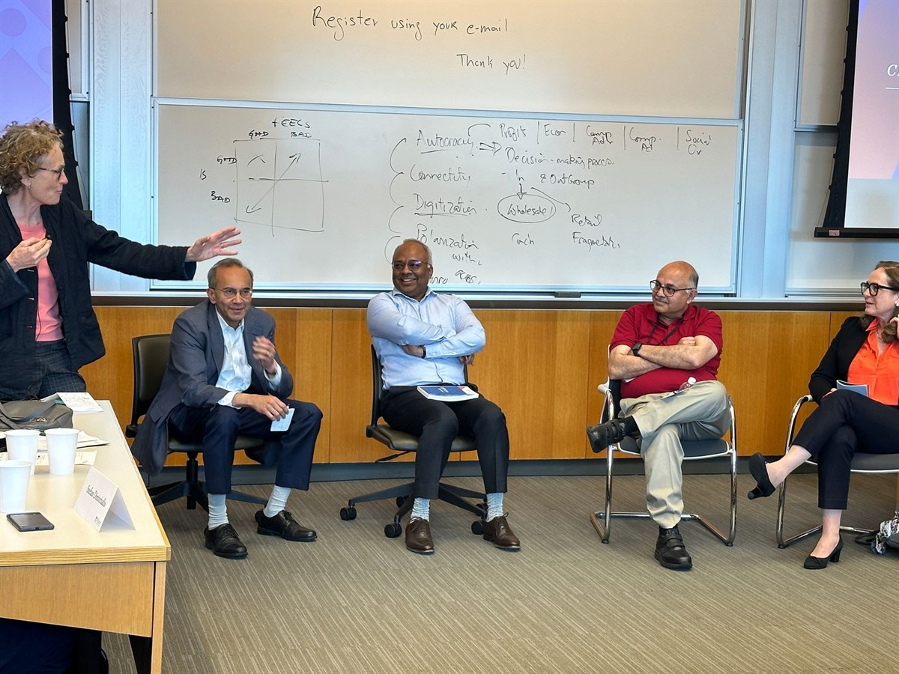
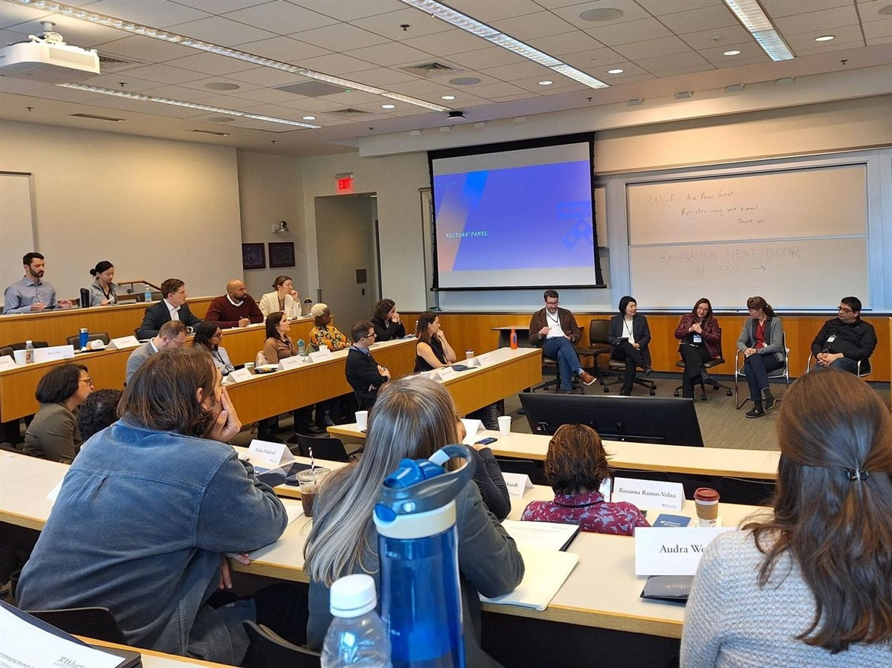

A research community fostering collaboration among scholars, researchers, and practitioners dedicated to advancing the understanding and development of emerging markets.
Join the Consortium Annual ConferenceThe Management in Emerging Markets Consortium aims to foster collaboration among scholars, researchers, and practitioners dedicated to advancing the understanding and development of emerging markets. The consortium serves as a platform for sharing knowledge across institutions and across borders, facilitating research collaborations, and supporting the growth of junior faculty and doctoral students.
The consortium represents a unique opportunity to advance the field through collaboration, innovation, and shared learning.
Annual conferences, regular webinars, workshops, and discussion forums where members present their work and share experiences — facilitating the exchange of innovative strategies, methodologies, and insights related to research on emerging markets.
An online platform providing resources, mentorship, and funding opportunities for early-stage research projects — supporting research collaborations and the development of junior faculty and doctoral students.
Regular virtual seminars where members present research and receive feedback, plus Professional Development Workshops at major management conferences such as the Strategic Management Society (SMS) and the Academy of Management (AOM).

